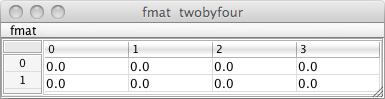

f01. FTM Basics — fmat
Specialized FTM Objects
To understand FTM & Co., let's start by understanding its fundamental objects, showing how they are similar to canonical Max objects and how they are different.
FTM adds four new objects to the palette: an enhanced object box (ftm.object) that allows creation of FTM data structures, an enhanced message box (ftm.mess) that has additional functions for communicating with FTM objects, a display object (ftm.vecdisplay) for visualizing (multiple) arrays of data, and a general-purpose editor (ftm.editor) for visualizing and modifying multiple arrays of diverse sorts of time-based data such as sound, MIDI, envelopes, control functions, analysis data, and so on.
There are several classes of FTM objects that can be created with the ftm.object box, depending on what class name you type into it, just as there are many classes of object you can type into the Max object box. Some FTM objects are just ordinary Max objects, and you create those with the normal Max object box; others are a class of the ftm.object and so to create those you type the class name into an ftm.object box.
fmat
We'll start by looking at the fmat class, which holds a two-dimensional (2D) matrix of floating point numbers. Jitter already provides a way of making a 2D matrix, namely the jit.matrix object; fmat is similar in concept but different in practice.
• Open the patch f01-fmat.
The way to create a 2D matrix of floats in FTM is to select the ftm.object from the palette and type in the word fmat followed by the dimensions of the matrix you want to create.
Note that the convention in FTM is to refer to the dimensions of a matrix in terms of rows and columns, so a fmat 2 4 object has 2 rows and 4 columns; that is to say, 4 cells along the x axis and two along the y axis. The rows-columns description used in FTM corresponds to the way 2D matrices are described in mathematics, but it's the opposite of the way 2D matrices are described in Jitter; Jitter uses a x-y or width-height terminology (or, you could say, a columns-rows terminology).
Similarly to Jitter, FTM manages the place in memory where the data will be stored, and you can optionally give the matrix a name. To give a fmat (or indeed any ftm.object) a name, type the name in the righthand part of the ftm.object box, or you can enter it in the object's Inspector. By default, that name is local, meaning that the name is only meaningful within that patch (or one of its subpatches, or the patch of which it is a subpatch). A separate patch could reuse that name, and the two patches' objects would be unrelated. That's different from Jitter, where the name of a matrix is global, referring to the same place in Max's memory regardless of where the name occurs. Optionally, you can make a FTM name global by choosing "global" instead of "local" in the object's Inspector. As in any programming environment that allows for both local and global names, you need to choose wisely and keep track of which names are local and which names are global.
Okay, so we've got a 2x4 matrix of floats and we've named it "twobyfour". When the object gets a bang in its inlet it sends a reference to that place in memory out of its left outlet (just as Jitter objects do). If you send the output to a Max print object, it won't print out anything very meaningful, just the word "ftm_object". But there is an object called ftm.print that behaves pretty much just like print, except that it understands ftm_object references and is smart enough to look at the proper place in memory and print out what it finds there.
• Click on the word "bang" to send a bang message to the fmat. The ftm.print object will print out information about the object, followed by the contents of the matrix, in the Max console window.
* You can also double-click on the fmat to open up a display/editor window that allows you to see and change its contents.

Notice that ftm.print is just an ordinary Max object (albeit one that is provided as part of the FTM package), not a class of the special ftm.object. So to create ftm.print, you just type it into an ordinary Max object box (not into a ftm.object box).
You will also notice that in this patch all the message boxes look slightly different from normal Max message boxes. That's because these are instances of the ftm.mess object, the "enhanced" message box provided in FTM. It does pretty much all the same stuff that the Max message box does, and in many cases it's completely interchangeable with the Max message box, but it has additional capabilities that are crucial in FTM. So in these tutorials we'll always use ftm.mess objects for FTM purposes, even in cases when a Max message box would work just as well. (However, we'll still call it a "message box" in cases when "ftm.mess" would just sound clumsy.)
• Now click on the word "random" to send the message random to fmat. The cells of the matrix get filled with randomly chosen (i.e., pseudo-randomly generated) numbers in the range from 0 to 1. This message also causes a reference to the matrix to be sent out the right outlet after the operation is completed, thus the matrix contents get printed by the right ftm.print object.
The random message to fmat (just like all messages in Max) calls upon a method in the receiving object—a particular task that it knows how to perform. The fmat class has a random method that can have zero, one, or two arguments after it. If there are no arguments, the range of random numbers is from 0 to 1. (Well, technically the range is from 0 to almost 1. It will never actually choose the number 1 exactly.) If there is one argument, the range of random numbers is from 0 to (almost) that value. In effect, it generates random numbers from 0 to 1 and then multiplies each one of them by that value. If there are two arguments, the random numbers are constrained within the range between those two values.
• Try clicking on the messages random, random 128 and random -0.75 0.75 to see the effect of the different arguments.
The method floor in fmat throws away the fractional part of numbers, leaving only the whole number portion. So if we follow the random message with a floor message, we effectively get random integers in the requested range. The random method always produces float results, even if you give it integers as arguments. The floor method does the truncation that converts them to whole numbers.
• Try clicking on the message "random 21 108, floor" to see the effect. Notice that ftm.print first prints out the random numbers as a result of the random 21 108 method, then it prints out the altered numbers as a result of the floor method. Both these methods (and indeed most methods in ftm.object) have this effect of sending out a ftm_object reference message after the operation has been completed.
Almost all ftm.object methods return something when they're done, and whatever the method returns gets sent out the right outlet.
The ftm.mess object can refer remotely to the contents of a fmat with $ and the name of the matrix, as in $twobyfour, either in order to include that data in its message, or to send a method to that fmat. The righthand side of this patch shows how all of the messages that were sent directly into the inlet of the ftm.object could also be sent remotely by ftm.mess, by specifying the fmat name where the method should be sent. In that case, however, the reference that is returned by the method comes out of the outlet of the ftm.mess, not out of the right outlet of the fmat.
The parentheses in the ftm.mess objects indicate a function to be performed by the ftm.mess. The ftm.mess object can perform many operations itself (beyond the scope of the basic Max message box), and those capabilities will be discussed in the next chapter. Sending methods remotely to a ftm.object is just one of the functions it can perform. When the first word inside a function is a $ reference to an ftm.object, that means that the other arguments of the function are a method call to be sent to the named class, which in this case is the fmat twobyfour.
• Click on the first four messages on the righthand side of the patch. You will see that the effect on the fmat is the same as when the method calls were being sent in directly as messages. The only difference is that the ftm_object reference now comes out the outlet of the ftm.mess (and gets printed by the ftm.print object named from_ftm.mess) instead of out of the right outlet of the ftm.object.
• Now click on the last of those ftm.mess boxes, the one outlined in green that says "($twobyfour random 21 108); ($twobyfour floor)". The only difference here is that the semicolon has the effect of suppressing the output of the ftm.mess object after the random method. If you want to include more than one method in a single ftm.mess message but suppress the reporting of the results until all the methods have completed, you can use a semicolon in place of a comma as a message separator. Notice: This is a feature of the ftm.mess object that makes it different from the Max message box. In the Max message box a semicolon is used to send a message remotely to all objects having a certain name. The ftm.mess object also has the ability to communicate remotely with a ftm.object, but it uses a dollar sign $ followed immediately by the name it wants to reference, instead of the semicolon.
The ability to alter the contents of a FTM data structure remotely (without being connected to it by a patch cord) and in place (i.e., without passing it to another object or copying it somewhere else) is one of the most powerful features of FTM. However, it's not the way that Max most commonly works, so it may take some getting used to. You must remember that an fmat is not only an object in the usual Max sense, it's also the manager of a particular data storage structure, and most of its methods are specifically for altering the contents of its own stored data. So any method sent to it, even by remote reference, can potentially change its contents.
• The fmat class has dozens of methods for modifying its contents, of which we have demonstrated only two (random and floor). If you want to get a terse description of all of its methods, click on the ftm.mess that says "(info class fmat)" and the method descriptions will all be printed in the Max console window.
Comparison with Jitter
By way of comparison, you might want to take a look at an example of how a similar matrix of floating point data, containing random numbers from -0.75 to 0.75 would be generated in Jitter. The idea is the same, but the methodology is quite different.
• Double-click on the patcher object to see an example of a comparable operation programmed using Jitter objects.
The jit.matrix object creates a 2D matrix of floats, just as the fmat did. The jit.noise object creates another matrix of the same size and type. When jit.noise receives a bang, it fills its matrix with random numbers in the range from 0 to 1 and sends a reference to that place in memory out its left outlet. That reference gets passed to jit.op which multiplies each of the cells by 1.5 (effectively expanding the range to be from 0 to 1.5) and passes a reference on to the next jit.op, which subtracts 0.75 from each cell (to offset the range so it's between -0.75 and 0.75) and passes a reference on to jit.matrix, which sets the cells of its own matrix to those values and then sends out a reference to its own matrix. Finally, the jit.print object, a specialized print object that only understands jit_matrix references, prints the contents of the matrix in the Max console window.
Neither the FTM methodology nor the Jitter methodology is inherently better than the other in this relatively simple example. As you will see in more complicated examples, each has its place for particular purposes.
Summary
The ftm.object object can be used to create any of a variety of class of FTM data structure. In this chapter we looked at the fmat class, a 2D matrix of floating-point numbers. The fmat creates and manages a data structure (the matrix of data) in memory, and has many methods of modifying that data in-place. The data—or more correctly, a reference to the place in memory where that data resides—can be sent out the outlet, or it can be referenced, accessed, and modified remotely by use of a $ argument referring to its name in ftm.mess, the enhanced message box for FTM.